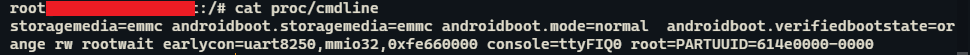

u-boot
参考自：[U-Boot 之八 详解 Driver Model 架构、配置、命令、初始化流程_u_boot_driver_ZC·Shou的博客-CSDN博客](https://blog.csdn.net/ZCShouCSDN/article/details/128600865#:~:text=U-Boot 的 DM 使用 uclass 和,udevice 这两个抽象的类来管理所有的设备驱动，这两个抽象类分别各自对应 uclass_driver 和 driver 。)
-
u-boot 的设备树和kernel共用一套；目前均采用设备树的方式配置
-
u-boot的config不共用，一般在：u-boot\configs\xxxx_defconfig下
-
目前u-boot引用自己的Driver Mode（官方简称 DM）驱动架构
---需开启CONFIG_DM_GPIO=y 宏和相关器件的宏
-
u-boot 最主要的两个宏：
UCLASS_DRIVER(__name) ==> uclass U_BOOT_DRIVER(__name) ==> udevice --- 初始化中，u-boot会遍历这些节区，然后进行内容匹配，依次创建各种设备和对应的UCLASS
==》 只有driver存在时，才会创建uclass
uclass
是根据uclass_driver动态创建的。
u-boot参数--cmdline
--- cmdline 由多个数据拼接而成，将重复数据过滤后再传给kernel； --- cmdline 是uboot引导内核启动时传给内核的，作用是指导内核启动；内核启动阶段会去解析cmdline，按照cmdline去指导内核启动
-
查询cmdlie
cat proc/cmdline
-
cmdline 参数说明